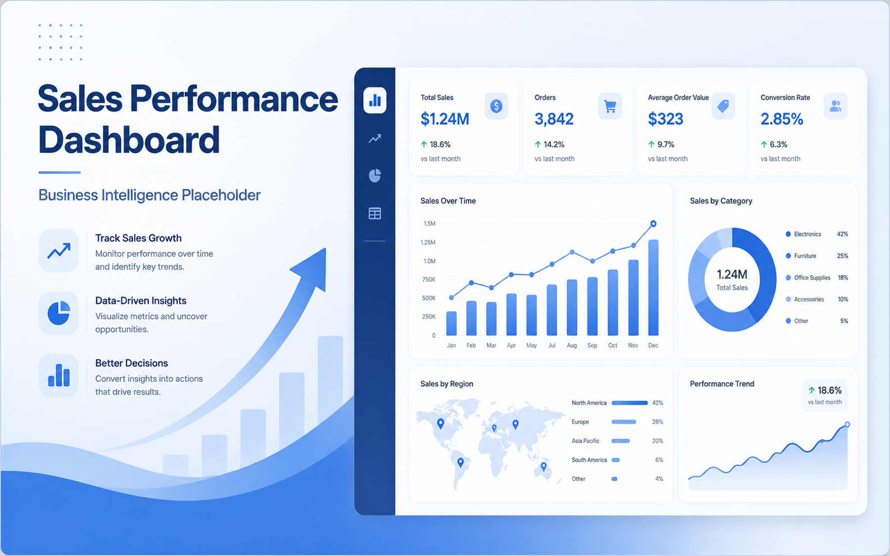
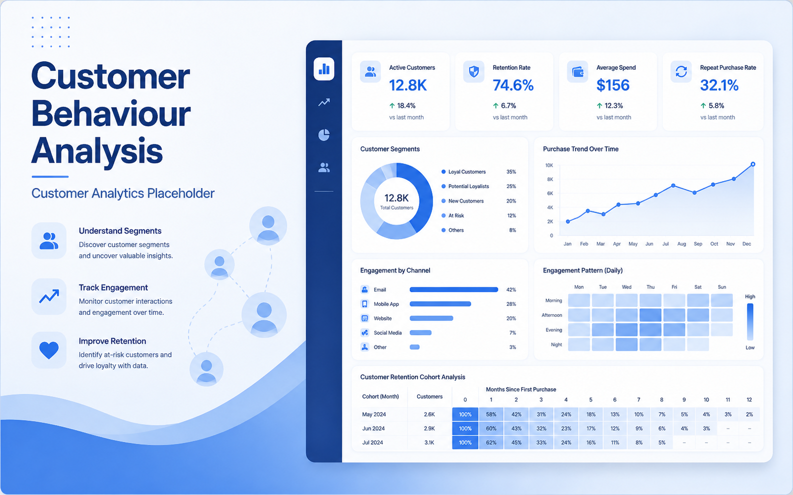
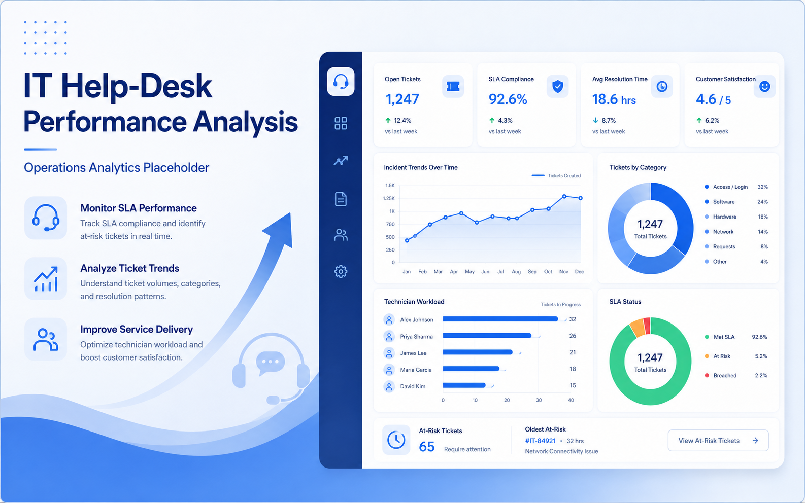
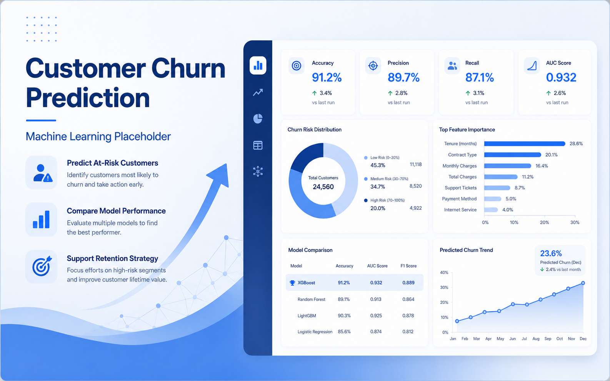

01
Business Analytics
I analyse sales, operational, customer and service data to identify performance trends, inefficiencies and growth opportunities.
SQL · Excel · Power BI
DATA ANALYST PORTFOLIO
I am a Computer Science graduate specialising in data analytics, business intelligence and machine learning. I use SQL, Python, Excel and Power BI to clean data, uncover trends, build dashboards and communicate practical recommendations.
Data Analyst
Business Analytics · SQL · Python · Power BI · Machine Learning
Based in Maryland, USA
WHAT I DO
My projects demonstrate the complete analytics process: understanding the business problem, cleaning data, analysing patterns, creating visualisations and presenting recommendations.
I analyse sales, operational, customer and service data to identify performance trends, inefficiencies and growth opportunities.
SQL · Excel · Power BI
I create clear dashboards that help stakeholders monitor KPIs, compare results and make informed decisions.
Power BI · Tableau · Python
I build and evaluate predictive models for tasks such as customer churn, forecasting, classification and pattern recognition.
Python · scikit-learn · TensorFlow
FEATURED WORK
These projects demonstrate how I use data to answer business questions and communicate actionable findings.

BUSINESS INTELLIGENCE
Analysed sales, profit, product and regional performance to identify revenue trends and low-margin business areas.
View case study →
CUSTOMER ANALYTICS
Examined purchasing patterns, customer segments and retention indicators to identify opportunities for improving engagement.
View case study →
OPERATIONS ANALYTICS
Analysed ticket volume, SLA performance, resolution time and recurring incidents to identify service-improvement areas.
View case study →MACHINE LEARNING
In addition to descriptive and diagnostic analytics, I use machine-learning techniques to predict outcomes and support forward-looking business decisions.

PREDICTIVE ANALYTICS
Built and compared classification models to identify customers at risk of leaving and explored the factors associated with churn.
TECHNICAL TOOLKIT
SQL, Excel, pandas, NumPy, data cleaning, exploratory analysis and statistical analysis
Power BI, Tableau, matplotlib, dashboard design, KPI reporting and data storytelling
scikit-learn, TensorFlow, classification, regression, NLP, model evaluation and feature engineering
Python, Git, GitHub, Jupyter Notebook, VS Code, HTML, CSS and basic cloud technologies
LET'S CONNECT
I am interested in entry-level data analyst, business intelligence, reporting and analytics opportunities.